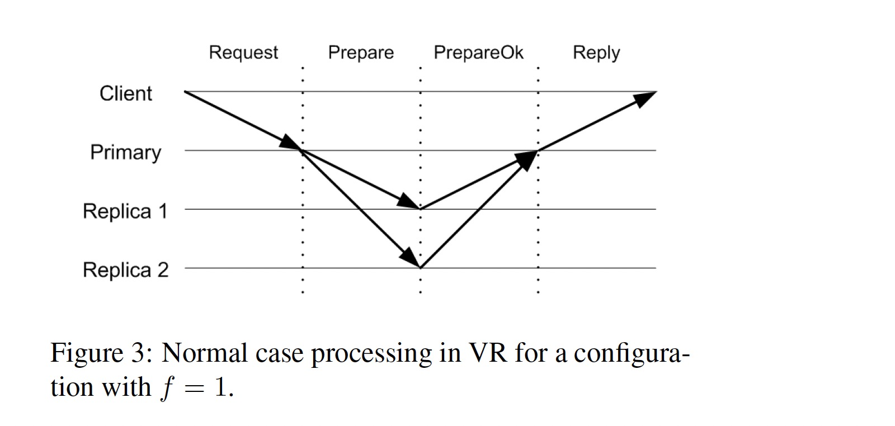

Viewstamped Replication Revisited
MIT technical report MIT-CSAIL-TR-2012-021, July 2012
https://pmg.csail.mit.edu/papers/vr-revisited.pdf
Viewstamped Replication 最初在 1988 年发表的 Viewstamped Replication: A New Primary Copy Method to Support Highly-available Distributed Systems 中提出，其原始描述与分布式 Transactions 协议耦合在一起，理解起来较为困难。2012 年发表的 Viewstamped Replication Revisited 将其共识算法抽取出来，对协议的描述更为清晰。本文基于 vr-revisited 介绍 VR 协议。
VR was originally developed in the 1980s, at about the same time as Paxos, but without knowledge of that work. It differs from Paxos in that it is a replication protocol rather than a consensus protocol: it uses consensus, with a protocol very similar to Paxos, as part of supporting a replicated state machine.
虽然论文声称 VR 不是 consensus，而是使用了 consensus 的复制协议，但通常在提到 VR 协议时，认为它就是共识算法。
Failure Mode
VR 假设集群中节点的失效模型为 crash failures，而非 Byzantine failures。VR 工作在异步网络模型（如 Internet），同时假设网络不会被恶意攻击者篡改。
Messages might be lost, delivered late or out of order, and delivered more than once; however, we assume that if sent repeatedly a message will eventually be delivered.
VR 是一个多数派的协议，一个 replica group 由 2f + 1 个节点组成，可以忍受 f 个节点同时失效，f + 1 个节点被称为 quorum，协议的正确性依赖 quorum intersection property:
The quorum of replicas that processes a particular step of the protocol must have a non-empty intersection with the group of replicas available to handle the next step, since this way we can ensure that at each next step at least one participant knows what happened in the previous step.
Architecture

上图显示了 f = 1 的 VR 架构图，客户端通过 VR Proxy 和集群进行交互，每个 Replica 包含两部分代码:
- VR Code: 运行 VR 协议，当一个请求可以被执行的时候，产生一个 up-call 让 service code 执行该请求
- Service Code: 执行请求，更新状态并将结果返回给 VR code，VR code 将结果消息发送给 client proxy
VR Protocol
State machine replication 要求所有的 replica 以同样的初始状态开始，执行同样序列的操作，最终会得到一样的状态。
The challenge for the replication protocol is to ensure that operations execute in the same order at all replicas in spite of concurrent requests from clients and in spite of failures.
VR 协议使用一个 primary replica 对客户端请求进行排序，backup replica 接受 primary 选择的请求顺序。当 primary 失效，集群通过 view change protocol 选择一个新的 primary，如何保证新的 primary 能反应已经被执行过的请求是一个挑战。
We support this requirement by having the primary wait until at least f + 1 replicas (including itself) know about a client request before executing it, and by initializing the state of a new view by consulting at least f + 1 replicas. Thus each request is known to a quorum and the new view starts from a quorum.
VR 使用三个 sub-protocols 来保证协议的正确性：
- Normal case processing of user requests.
- View changes to select a new primary.
- Recovery of a failed replica so that it can rejoin the group.
每个 replica 根据其 IP 地址被赋予一个 id，集群根据 replica id 循环（Round Robin）选择下一个 primary 角色。每个 replica 的 VR layer 维护了如下状态:
- configuration: 依据 2f + 1 个 relica 的 IP 地址排序的数组
- replica number: 该 replica 在 configuration 中排序数组的 index
- view-number: replica 当前的视图号，初始值为 0，递增
- status: replica 当前状态，可能值为 normal、view-change 或 recovering
- op-number: 赋予最新请求的操作id，初始值为 0，递增
- log: replica 上维护的包含操作记录的数组
- commit-number: 最新提交的请求操作的 op-number
- client-table: 对于每个客户端维护的最新的请求，如果该请求已经被执行过，则该结构还会保存请求对应的响应结果
1. Normal Operation: request processing protocol
在 primary 节点不出错的情况下，多个状态为 normal 且在同一 view 的 replicas 参与请求的处理。
Replicas only process normal protocol messages containing a view-number that matches the view-number they know.
该协议工作流程如下:

- 客户端发送
<Request op, c, s>消息给 primary，其中 op 是客户端想要执行的请求（包含参数），c 是客户端 id，s 是指定给请求的 request-number; - primary 收到请求后，将 request-number 和 client-table 中记录的信息进行对比。如果 request-number 不大于 client-table 记录的 request-number，该 request 被丢弃，如果该 request 是 client-table 记录的最新 request，primary 会给客户端重新发送该请求对应的响应;
- primary 增加 op-number 值，将请求追加到 log，更新 client-table 中对应该客户端的信息。向其它 replicas 发送
<Prepare v, m, n, k>消息，v 是 primary 当前的 view-number，m 是客户端发送的消息（即 Step 1 中的 Request），n 是指定给请求的 op-number，k 是 commit-number; - backups 按照顺序处理 Prepare 消息，当 backup 收到 Prepare 消息时，它会等待所有更早的请求都存在于其 log 后，增加其 op-number 值，将该请求追加到 log，更新 client-table，然后向 primary 发送
<PrepareOk v, n, i>消息，告诉 primay 该消息已经在本地日志就绪; - primary 在收到 f 个不同 backups 返回的 PrepareOk 消息后，认为该操作（及所有先前的操作）为 committed，在执行了所有更早的操作后，primary 通过 up-call 让 service code 执行该操作，并更新 commit-number。然后发送
<Reply v, s, x>消息给客户端，v 是 primary 当前的 view-number，s 是客户端的 request-number，x 是 up-call 返回的结果。primary 同时会更新 client-table 中对应该请求的结果; - 通常情况下，primary 通过下次 Prepare 消息通知 backups 当前的 commit-number，但是当在一定时间后未收到客户端发送的请求时，primary 会给 backups 返送
<Commit v, k>消息，v 是 primary 当前的 view-number，k 是当前的 commit-number; - backup 在收到 commit-number 更新后，等待 log 中所有早于 commit-number 的请求被执行后，执行 up-call 让 service code 处理 commit-number 对应的操作，递增 commit-number 值，并更新 client-table，不过 backup 不需要给客户端回复结果。
如果客户端在一定时间后未收到请求的响应，会将该消息发送给所有 replicas，这样能保证 replica group 进入下一个 view 后，请求可以发送给新的 primary。
2. view change Protocol
backup 通过 Prepare 和 Commit 消息对 primary 进行探活，如果在一定时间内未收到来自 primary 的消息，replicas 会通过 view change 切换新的 primary。
View Changes 保证正确性的前提是：每一个通过 up-call 被 service code 执行的请求，必须存活于下一个 view 且保证其在 log 中的顺序与执行顺序一致。
The correctness condition for view changes is that every committed operation survives into all subsequent views in the same position in the serial order. This condition implies that any request that had been executed retains its place in the order.
只有 committed 的操作会执行 up-call，这意味着旧的 primary 已经收到 f 个 backup 返回 PrepareOK 消息，进而意味着该操作已经在 f + 1 个 replica 的 log 中被记录。当 view change protocol 获取了 f + 1 个 replica 的日志信息后，依据 quorum intersection property，所有 committed 操作都能被新的 view 获取到。
该协议工作流程如下:
- replica i 根据其 timer 或在收到 view-number 大于该 replica 本身 view-number 的 StartViewChange 或 DoViewChange 消息后，执行 view change，将自己的状态置为 view-change，增加其 view-number，然后给其它 replicas 发送
<StartViewChange v, i>消息，其中 v 为新视图的 view-number; - 当 replica i 收到 f 个与其 view-number 相同的 StartViewChange 消息后，该 replica 发送
<DoViewChange v, l, v', n, k i>消息给下一个视图的 primary（通过 Round Robin 指定）。其中 v 是该 replica 的 view-number，l 是它的 log，v' 是状态为 normal 的最近的视图的 view-number，n 为 op-number, k 为 commit-number; - 当新的 primary 从不同 replicas（包括其自己）收到 f + 1 个 DoViewChange 消息后，它将自己的 view-number 及 log 设置为 v' 最大或多个具有最大 v' 中 n 最大的消息对应的 v 及 log，将其 op-number 设置为新 log 的最大 index，将其 commit-number 设置为所有 DoViewChange 中最大的 commit-number，然后将其状态设置为 normal，通过给各 replica 发送
<StartView v, l, l, n, k>来通知其它 replica view change 过程结束，其中 l 为新的日志，n 为 op-number，k 为 commit-number; - 新 replica 开始接收客户端请求，将之前未执行的
committed操作执行一遍，更新 client-table，并给客户端发送响应; - 当其它 replica 收到 StartView 消息后，它们更新本地的 log、op-number 及 view-number，将状态设置为 normal，并更新 client-table 中的信息。如果日志中有未提交的操作，replica 会给 primary 发送
<PrepareOk v, n, i>，然后执行之前未执行的committed操作，增加 commit-number 值，并更新 client-table 的信息。
VR as originally defined used a slightly different approach: it assigned each operation a viewstamp. A viewstamp is a pair <view-number, op-number>, with the natural order: the view-number is considered first, and then the op-number for two viewstamps with the same view-number.
VR 在最初的论文中根据如上定义被命名为 viewstamps。
一个 View Change 过程可能由于新 primary 的失败而失败，这种情况下需要执行新一轮的 View Change。
3. recovery protocol
当一个 replica 从失败中恢复后，它不能参与集群的请求处理及 view changes 直到它获取到至少它失败时的状态。如果在磁盘上记录了状态，节点在读取磁盘重新初始化其状态后可以马上重新加入到系统中:
The reason is that in this case a recovering node hasn’t forgotten anything it did before the crash (assuming the disk is intact). Instead it is the same as a node that has been unable to communicate for some period of time: its state is old but it hasn’t forgotten anything it did before.
但 VR 为了提高其吞吐，并未在发送 Prepare 及 PrepareOk 消息之前写磁盘，其假设所有几点不会在同一时刻同时失败，及 replcas 具有 failure independent 的属性（依赖 UPS、non-volatime memory 或将 replica 放置在不同的地理位置）。
该协议工作流程如下:
- 需要恢复的 replica i 给其它 replica 发送
<Recovery i, x>，其中 x 是一个递增的 nonce 值; - replica j 在状态为 normal 的前提下回复
<RecoveryResponse v, x, l, n, k, j>消息给 replica i，v 是 view-number，x 是 Recovery 消息中的 nonce 值，如果 j 为当前视图的 primary，则 l 是其 log，n 为 op-number，k 为 commit-number，如果为 backup，则 l、n、k 的值都为 nil; - 当 replica i 从不同节点收到 f + 1 个 RecoveryResponse 消息后（所有消息需包含与 Recovery 消息相同的 nonce，且至少有一个包含这些消息中含有最新视图的 primary 节点的消息），replica i 依据 primary 返回的信息更新其 log、view-number、op-number 及 commit-number，并将其状态改为 normal。
当需要恢复的 replica i 同时为 view change 的 new primary 时，由于 replica i 不会回复 DoViewChange 消息，因此 view change 不能完成。这种情况下会进行新一轮的 view change。
nonce 的作用在于避免需要恢复的节点接收之前 Recovery 消息对应的 RecoveryResponse。
When a replica recovers it doesn’t know what view it was in when it failed. However, when it receives f + 1 responses to its RECOVERY message, it is certain to learn of a view at least as recent as the one that existed when it sent its last PREPAREOK, DOVIEWCHANGE, or RECOVERYRESPONSE message. Furthermore it gets its state from the primary of the latest view it hears about, which ensures it learns the latest state of that view.
Efficient log
如上协议中的 log 在长时间运行之后可能会非常巨大，依赖 application state 及 checkpoints 可以高效地管理日志，并可以将无用的 log 进行 gc。高效的日志管理对于提升 Recovery、State Transfer、View Changes 的性能都有很大的帮助，详细分析见论文。
Optimizations
论文中提到了几个可以提高协议性能的优化点:
- Witnesses: 只执行 VR Code，不执行 Service Code。同时执行 VR Code 和 Service Code 的节点被称为
active replica，primary 总是active replica - Batching: primary 收集一堆请求同时运行 VR 协议，以提高 throughput
- Fast Reads
- Reads at the Primary: 依赖 lease 避免读取 old primary 中 stale 的数据，一个新 view 只会在 view change 算法的 f + 1 个参与者的 lease 结束后才开始，这样保证了新视图在旧 primary 停止回复读取操作后才开始
- Reads at Backups: 客户端维护 last-request-number，当进行写操作时，replica 返回请求的 op-number；当进行读操作时，replica 返回当前的 commit-number。客户端将 replica 返回的值保存在 last-request-number，在进行读取操作时，将该值包含在读请求中，replica 只有在至少执行到 last-request-number 对应的操作时才会回复客户端。
Reconfiguration
当有机器不可恢复、改变机器规格或者需要增大或缩小集群最大容错数 f 时，需要对集群进行 Reconfiguration。具体细节见 paper，本文略。
另外 VR 的 Reconfiguration 在进行中不能处理客户端请求，这点 Raft 更具优势 ?
TigerBeetle 实现了 VR protocol。
References:
[1] Viewstamped replication, a walk-through by Adrian Colyer
[2] Viewstamped Replication Revisited, a walk-through by Adrian Colyer
[3] Bruno Bonacci on Viewstamped Replication @PWL London
[4] Paper #74. Viewstamped Replication Revisited by Joran Dirk Greef